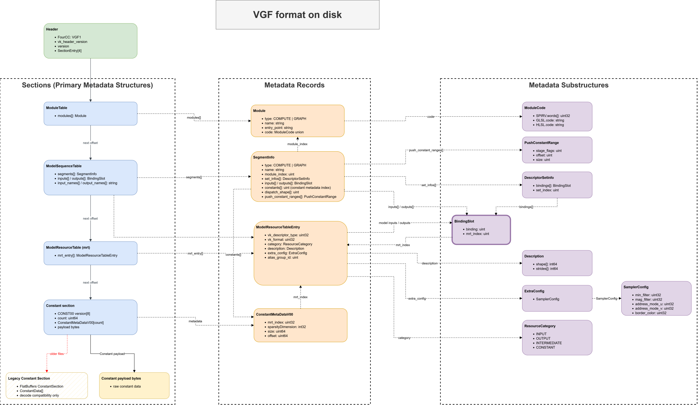

VGF File Format
This page describes the VGF on-disk layout written by the current encoder and accepted by the current decoder.
The metadata tables are defined in schema/vgf.fbs; the fixed header and raw constants section are defined by
the C++ layout constants in src/header.hpp and src/constant.hpp.
VGF File Structure
The file starts with a fixed 128-byte header. The header records the file format version, the Vulkan header version
used by the encoder, and four file-relative section entries. Each section entry contains a uint64 offset and a
uint64 size.
The current section order is:
Header
Module Table section
Model Sequence Table section
Model Resource Table section
Model Constants section

Current VGF file layout and cross-references between the header, FlatBuffers metadata tables, resources, segments, descriptor bindings, and constants.
Header Layout
New files use format version 0.4.3 and write the VGF1 FourCC magic. The decoder still accepts the deprecated
pre-FourCC magic value for backward compatibility.
Offset |
Size |
Field |
Description |
|---|---|---|---|
0 |
4 |
|
FourCC |
4 |
2 |
|
|
6 |
2 |
|
Reserved; written as zero. |
8 |
3 |
|
|
11 |
1 |
|
Reserved; written as zero. |
12 |
4 |
|
Reserved; written as zero. |
16 |
16 |
|
Offset and size for the Module Table section. |
32 |
16 |
|
Offset and size for the Model Sequence Table section. |
48 |
16 |
|
Offset and size for the Model Resource Table section. |
64 |
16 |
|
Offset and size for the Model Constants section. |
80 |
48 |
|
Reserved; written as zero. |
The decoder validates that the magic and major/minor version are supported and that every section range is contained
inside the file. IsLatestVersion additionally checks for an exact 0.4.3 match.
Section Alignment
VGF files written with format version 0.4.3 or later align every section offset to an 8-byte boundary. Padding
between sections is written as zero bytes and is not included in the preceding section size. Decoders remain compatible
with older files whose section offsets were not guaranteed to be 8-byte aligned.
FlatBuffers Metadata Sections
The Module Table, Model Sequence Table, and Model Resource Table sections are FlatBuffers buffers. Each section is verified independently before decoding.
The Module Table stores Module entries:
typeisCOMPUTEorGRAPH.nameandentry_pointare strings.codeis aModuleCodeunion. Current code variants are SPIR-Vuint32words, GLSL source, and HLSL source.
The Model Sequence Table stores model-level inputs and outputs plus ordered SegmentInfo entries. Segment metadata
links runtime execution state together:
module_indexindexes the Module Table.set_infosstores descriptor sets.DescriptorSetInfo.set_indexis explicit when present;UINT32_MAXmeans it was omitted and decoders fall back to the descriptor’s array position.inputsandoutputsareBindingSlotarrays. Each binding slot records a descriptorbindingand anmrt_indexinto the Model Resource Table.constantsstores indexes into the Model Constants metadata records.dispatch_shapeis expected to contain three elements when present.push_constant_rangesstores Vulkan stage flags, byte offsets, and byte sizes.
The Model Resource Table stores ModelResourceTableEntry records:
vk_descriptor_typeandvk_formatare stored as opaque Vulkan enum values.vk_descriptor_typeusesUINT32_MAXas the on-disk “not present” sentinel for resources such as constants.categoryisINPUT,OUTPUT,INTERMEDIATE, orCONSTANT.descriptionstores tensorshapeandstridesarrays.extra_configis an extension point. The current supported variant isSamplerConfig.alias_group_idusesUINT32_MAXas the “no alias group” sentinel. Non-constant resources may share a group id to indicate shared storage.
Model Constants Section
New VGF files store the Model Constants section as a compact raw byte section. Older files can still contain the
legacy FlatBuffers ConstantSection layout; the decoder keeps support for that legacy representation.
The current raw constants layout is version CONST00:
Offset |
Size |
Field |
Description |
|---|---|---|---|
0 |
8 |
|
Fixed bytes |
8 |
8 |
|
Number of constant metadata records. |
16 |
|
|
Fixed-size |
|
remaining bytes |
|
Raw constant data bytes. |
Each ConstantMetaDataV00 record is 24 bytes:
Offset |
Size |
Field |
Description |
|---|---|---|---|
0 |
4 |
|
Model Resource Table index for the constant resource. |
4 |
4 |
|
Sparse dimension, or |
8 |
8 |
|
Constant data size in bytes, excluding any padding. |
16 |
8 |
|
Offset in bytes from the start of the payload region. |
Constant payload entries are stored as raw bytes. The encoder pads each payload entry to an 8-byte boundary, but
size always describes the unpadded constant data length returned by the decoder.
Caution
The fixed header and raw constants section store fixed-width integer fields without endian conversion. The target host and the host that created the VGF file must use the same endianness for these raw portions.